Squatiniformes
สควาตินิฟอร์เมส (Squatiniformes) คืออันดับของฉลามที่อยู่ในกลุ่ม Squalomorphi โดยมีเพียงสกุลที่ยังมีชีวิตอยู่เพียงหนึ่งเดียวคือ Squatina ซึ่งรู้จักกันทั่วไปในชื่อ “ฉลามเทวดา” (angelsharks)
squatinidae (ฉลามเทวดา)
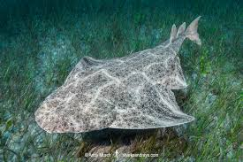
Pristophoriformes
Pristiophoriformes หรือที่รู้จักในชื่อว่า ฉลามเลื่อย เป็นฉลามกลุ่มหนึ่งที่ทั้งหายากและมีลักษณะเฉพาะตัวอย่างเด่นชัด จุดเด่นของพวกมันคือ จมูกยาวเรียวคล้ายใบเลื่อย ซึ่งมีฟันคมเรียงอยู่ตลอดขอบ ใช้ฟันั้นฟาดหรือกรีดเหยื่ออย่างรวดเร็วขณะล่า แม้จะดูคล้ายปลากระเบนเลื่อย แต่ฉลามเลื่อยมีลำตัวเพรียวบาง เหงือกอยู่ด้านข้างลำตัว และเป็นปลาฉลามแท้ต่างหากจากกระเบนชนิดอื่น ๆ ในธรรมชาติ ซึ่งแบ่งออกเป็น 2 วงศ์ : Pristiophoridae และ Schleorhynchidae (สูญพันธ์แล้ว)
Pristiophoridae (ไม่พบเจอในไทย)
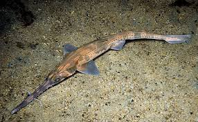
Sclerorhynchidae (สูญพันธ์แล้ว)
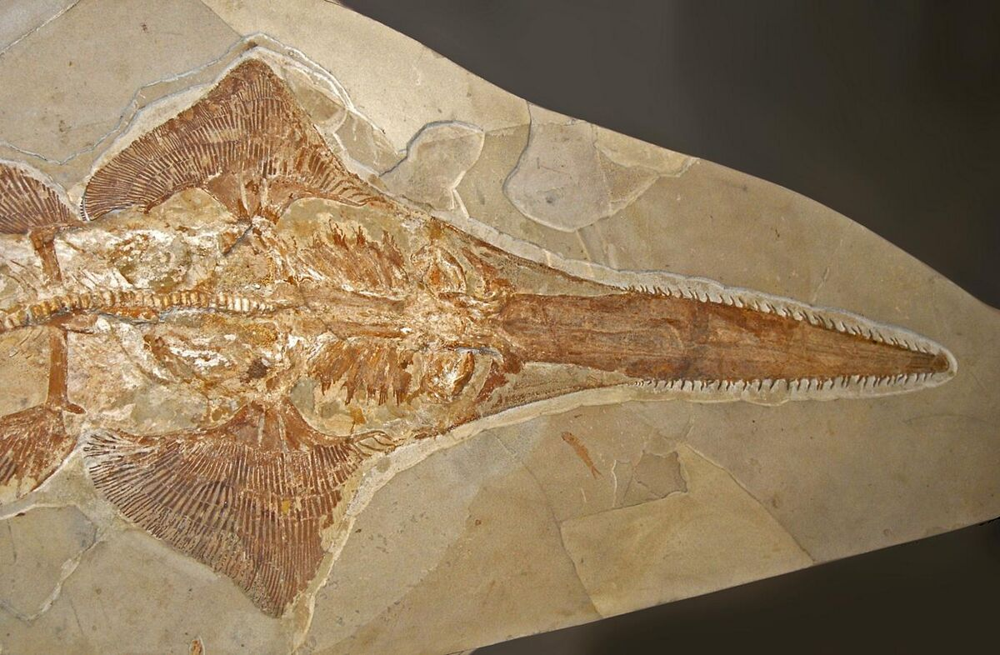
Squaliformes
Squaliformes มีลักษณะเด่นคือมีครีบหลัง 2 ครีบ ซึ่งมักมีหนามแหลมอยู่ด้วย ส่วนหัวมักจะแหลม ไม่มีครีบทวาร (anal fin) และไม่มีเยื่อตาปิดตาแบบที่พบในฉลามบางชนิด แม้จะมีลักษณะร่วมกันบางอย่าง แต่โดยรวมแล้วรูปร่างและขนาดของฉลามในกลุ่มนี้มีความหลากหลายสูงมาก ฉลามในอันดับนี้ส่วนใหญ่พบในน้ำเค็มหรือน้ำกร่อย กระจายตัวอยู่ทั่วโลก ตั้งแต่น่านน้ำเขตอบอุ่นจนถึงเขตร้อน และจากทะเลชายฝั่งตื้นจนถึงทะเลลึกกลางมหาสมุทร
Centrophoridae (ปลาหลังหนามครีบยาว)
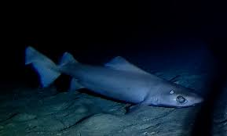
Dalatiidae
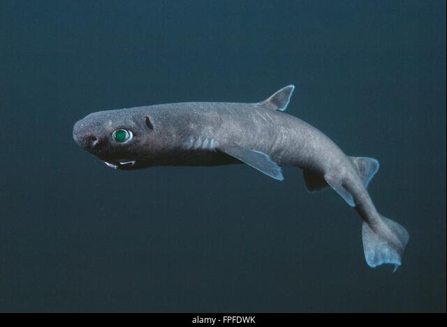
Etmopteridae
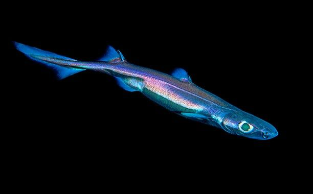
Oxynotidae
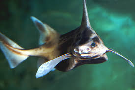
Somniosidae
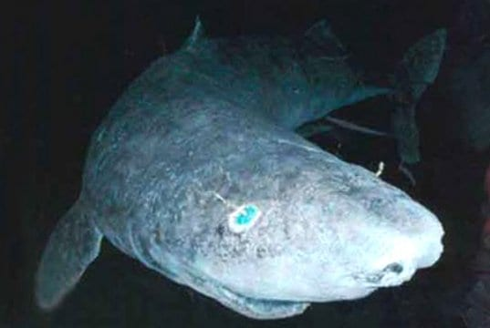
Squalidae
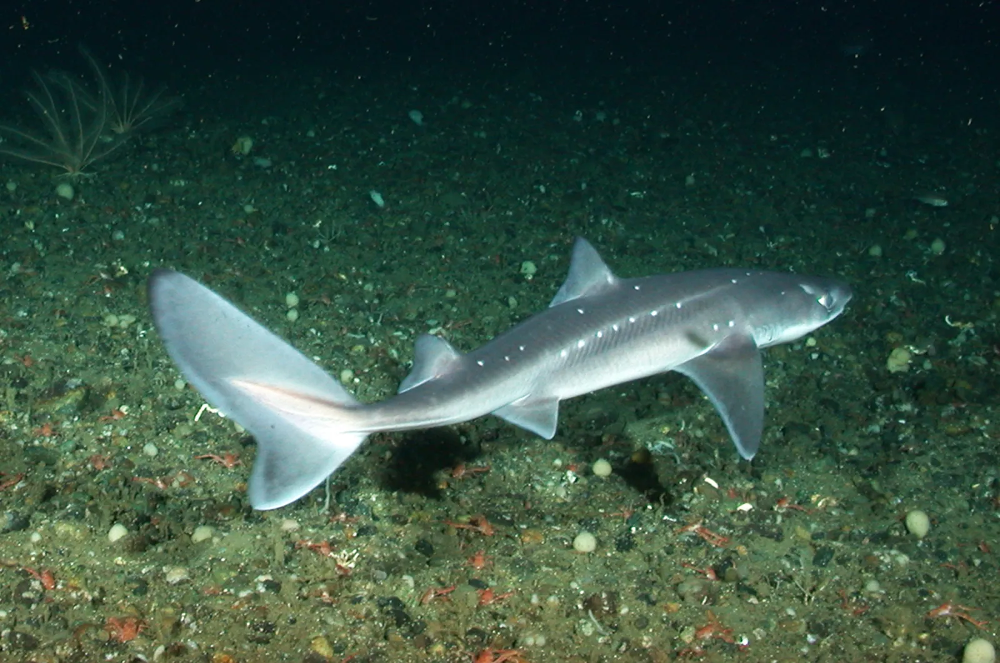
Hexanchiforme
มีลักษณะเฉพาะทางกายวิภาคที่แตกต่างจากฉลามกลุ่มอื่นอย่างชัดเจน โดยมีลักษณะสำคัญดังนี้: มี ครีบหลังเพียงครีบเดียว และไม่มีหนาม (spineless) ซึ่งมักอยู่ตรงกับหรือเลยไปด้านหลังของครีบท้อง มี ครีบก้น (anal fin) 1 ครีบ กระดูกสันหลัง ยืดยาวเข้าไปในแฉกบนของครีบหาง ทำให้แฉกบนยาวเด่น ส่วนแฉกล่าง (ventral lobe) มีขนาดเล็กหรือแทบไม่มีเลย มี ช่องเหงือก 6 หรือ 7 ช่อง (ต่างจากฉลามทั่วไปที่มีเพียง 5) ซึ่งอยู่ หน้าครีบอก ปากกว้าง ดวงตาอยู่ด้านข้างของศีรษะ รูหายใจเสริม (spiracles) มีขนาดเล็ก อยู่สูงเหนือและถัดไปด้านหลังของดวงตา ดวงตาไม่มี เยื่อตาปิด (nictitating membrane)
Chlamydoselachidae — ฉลามคอพับ (Frilled sharks)
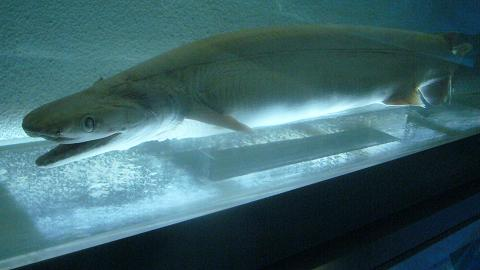
Hexanchidae — ฉลามวัว (Cow sharks)
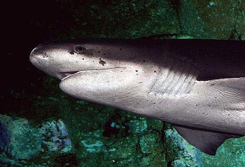
Carchariniformes
หรือที่เรียกกันทั่วไปว่า "ฉลามพื้นท้องทะเล" (ground sharks) เป็น อันดับ (order) ของฉลามที่ใหญ่ที่สุดในโลก โดยมีมากกว่า 270 สปีชีส์ รวมอยู่ในกลุ่มนี้ ซึ่งหมายความว่าฉลามหลายชนิดที่คนคุ้นเคยมากที่สุด มักอยู่ในกลุ่มนี้
Carcharhinidae (ฉลามเรเควียม)
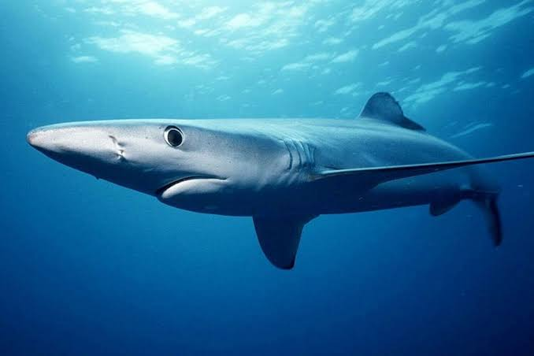
Hemigaleidae (ฉลามวีเซล)
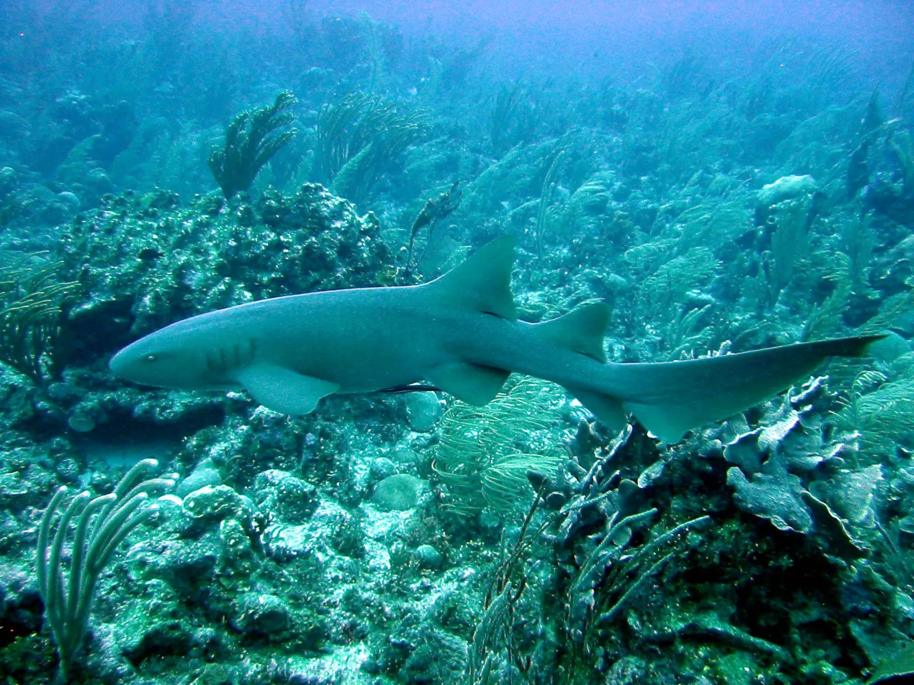
Leptochariidae (ฉลามเครายาว)
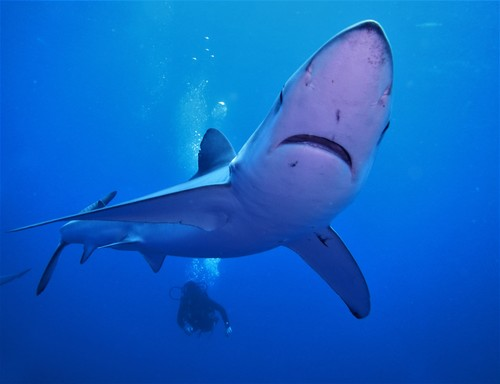
Proscylliidae (ฉลามฟินแบ็ค)
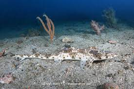
Pseudotriakidae (ฉลามหลอกแมว)
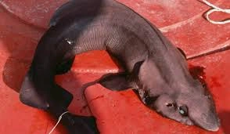
Scyliorhinidae (ฉลามแมว)
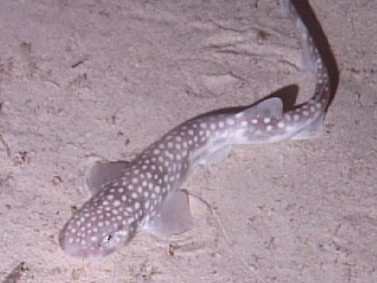
Sphyrnidae (ฉลามหัวค้อน)
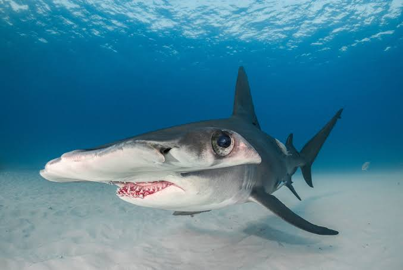
Triakidae (ฉลามฮาวด์)
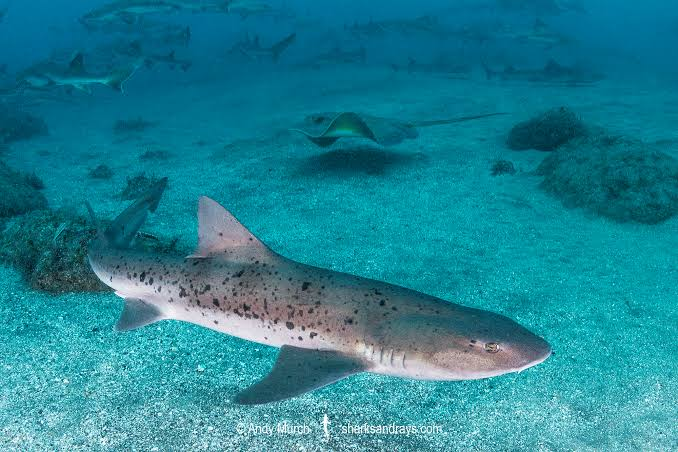
Lamniformes
ลามนิฟอร์เมส (Lamniformes) หรือที่เรียกว่า “ฉลามปลาแมคเคอเรล” (mackerel sharks) เป็นอันดับของฉลามที่มีสอง dorsal fins, anal fin, ห้า gill slits, และตาไม่มีเปลือกตาที่สาม รูปทรงลำตัวยาวเพรียว มี mouth ยาวเกินดวงตา :contentReference[oaicite:2]{index=2}
Alopiidae (ฉลามหางยาว/Thresher sharks)
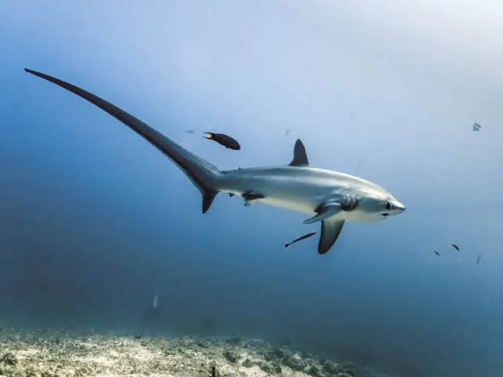
Cetorhinidae (ฉลามแพลงตอน/Basking shark)
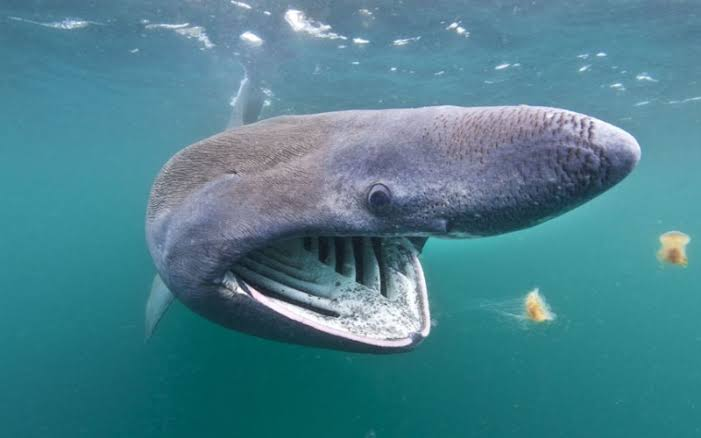
Lamnidae (ฉลามขาวและมะโค่/Mackerel sharks)
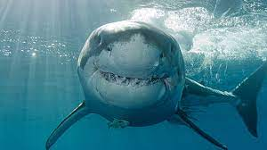
Odontaspididae (ฉลามทราย/Sand tiger sharks)
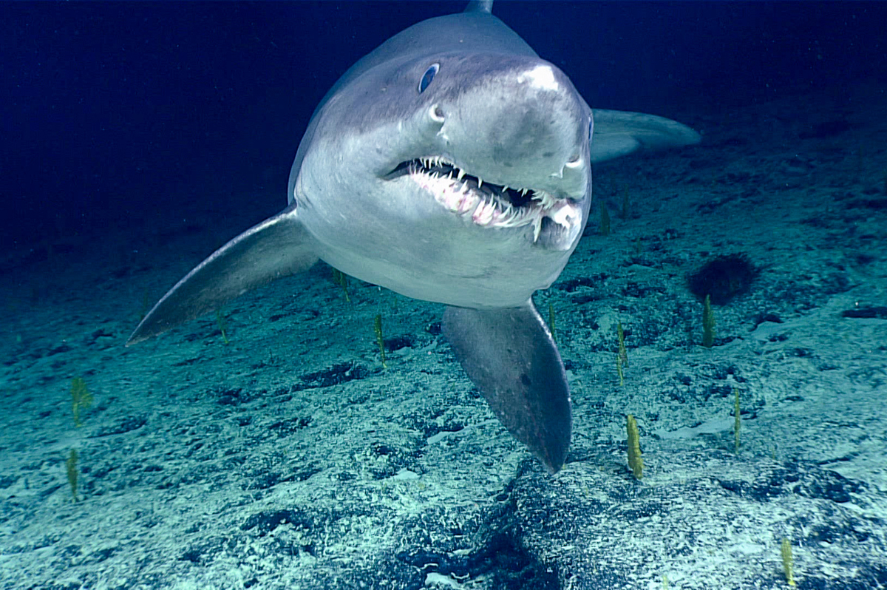
Pseudocarchariidae (ฉลามจระเข้/Crocodile sharks)
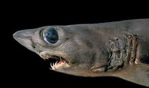
Mitsukurinidae (ฉลามโกบลิน/Goblin shark)
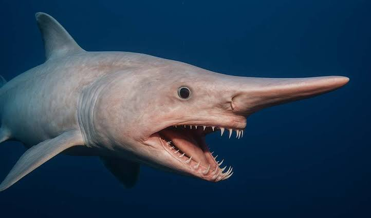
Megachasmidae (ฉลามเมกาเมาท์/Megamouth shark)
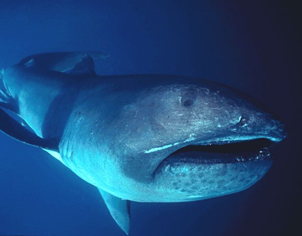
Carchariidae (ฉลามแซนด์แคร์/Sand diver sharks)*
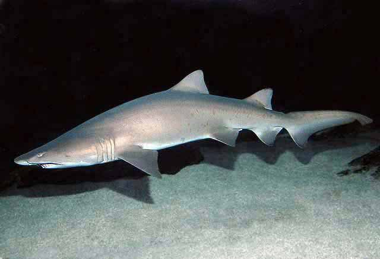
Orectolobiformes
Orectolobiformes หรือที่เรียกว่า “carpet sharks” เป็นอันดับของฉลามที่มี 7 วงศ์ยังมีชีวิตอยู่ มีลักษณะเด่นคือ ปากสั้นอยู่เหนือดวงตา ครีบหลังไม่มีหนาม หยั่งลึกลง gill slits ห้าคู่ และมักมีหนวด (barbels) ที่ข้างจมูก 🦈:contentReference[oaicite:2]{index=2}
Brachaeluridae (ฉลามบอด / Blind sharks)
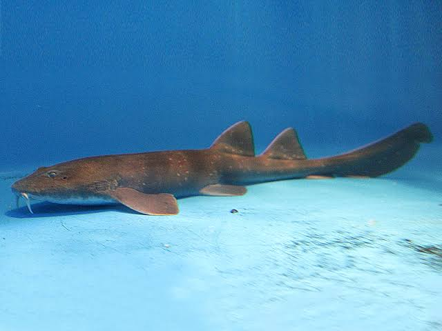
Ginglymostomatidae (ฉลามพยาบาล / Nurse sharks)
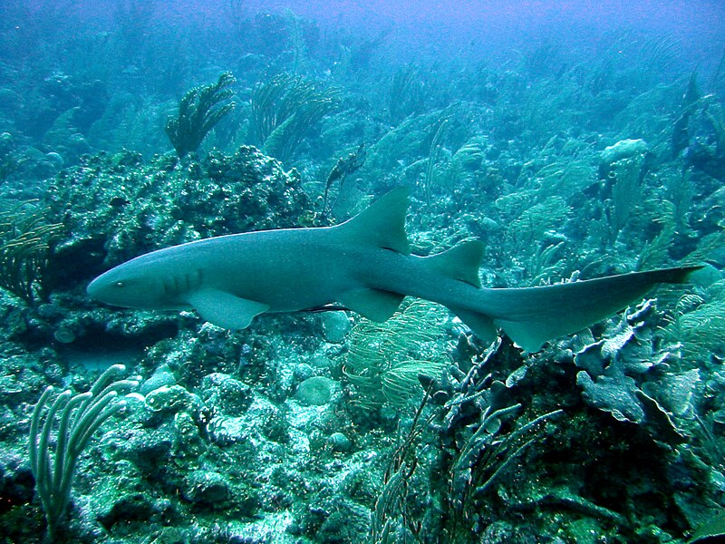
Hemiscylliidae (ฉลามบัมบู / Bamboo sharks)
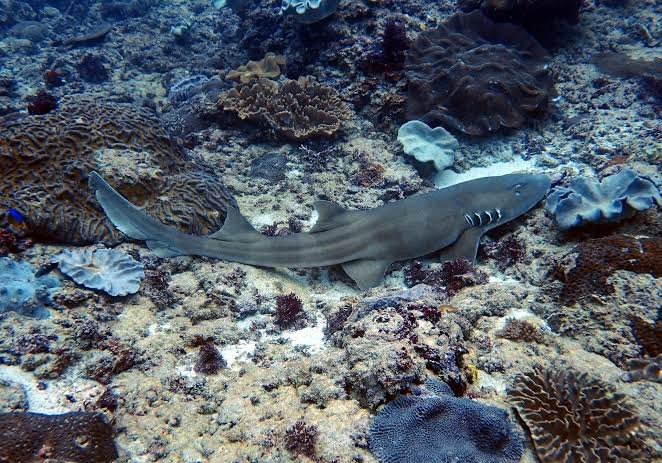
Orectolobidae (ฉลามวอบเบกอง / Wobbegongs)
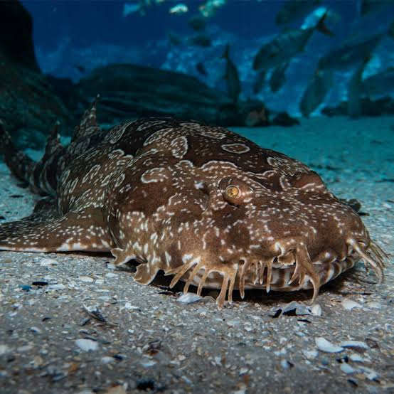
Parascyllidae (ฉลามคอสี / Collared carpet sharks)
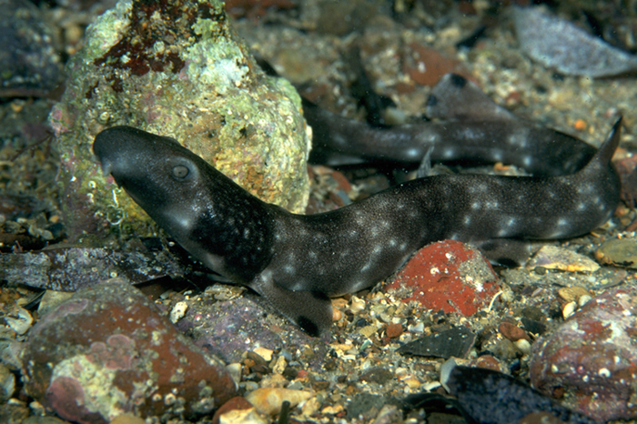
Stegostomatidae (ฉลามม้าลาย / Zebra sharks)
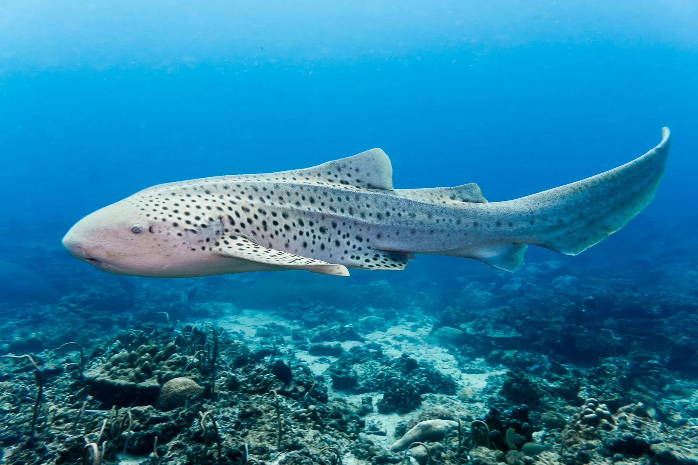
Rhincodontidae (ฉลามปลาวาฬ / Whale shark)

Heterodontiformes
Heterodontiformes หรือฉลามตะกอน เป็นอันดับของฉลามที่มีลักษณะเฉพาะ คือ มีครีบหลัง 2 อัน และแต่ละอันมีหนามแหลมคมอยู่ข้างหน้า ลำตัวมีลวดลายและหนามเล็ก ๆ ที่ครีบและหลัง
Heterodontidae (ฉลามตะกอน / Horn sharks)
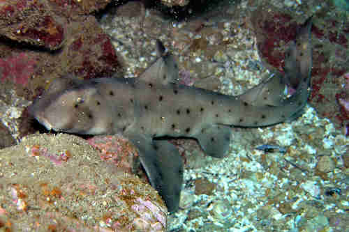